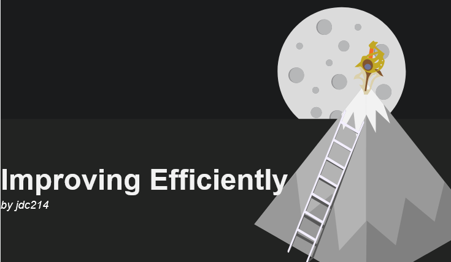
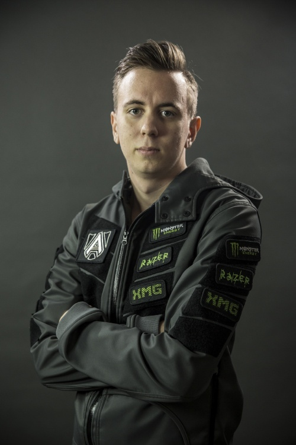
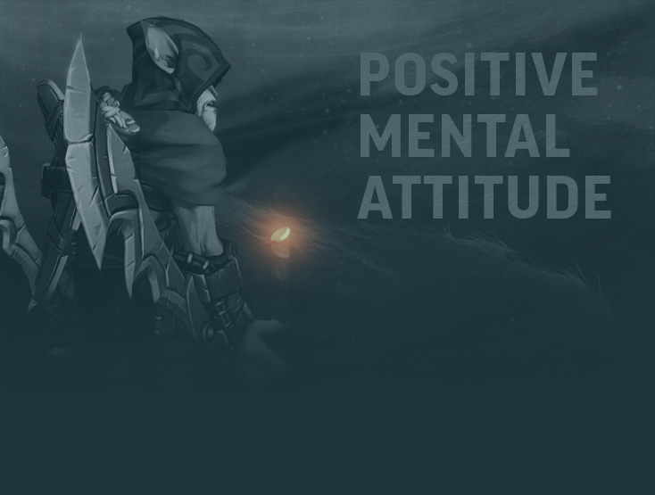
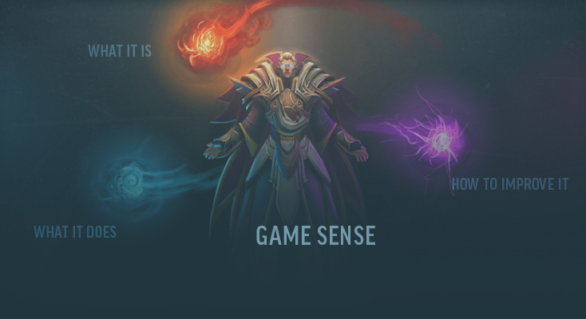
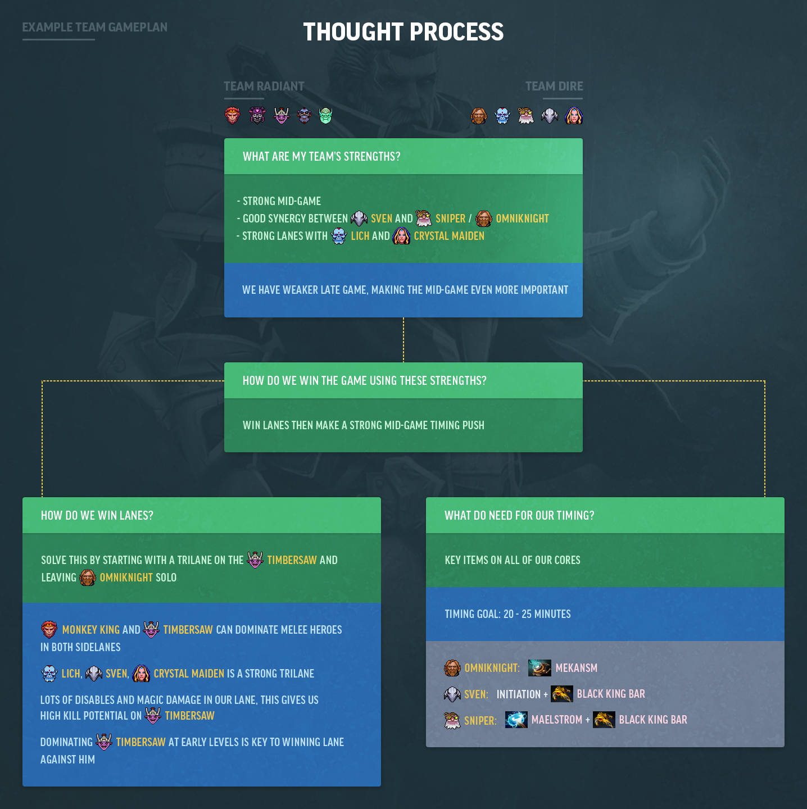
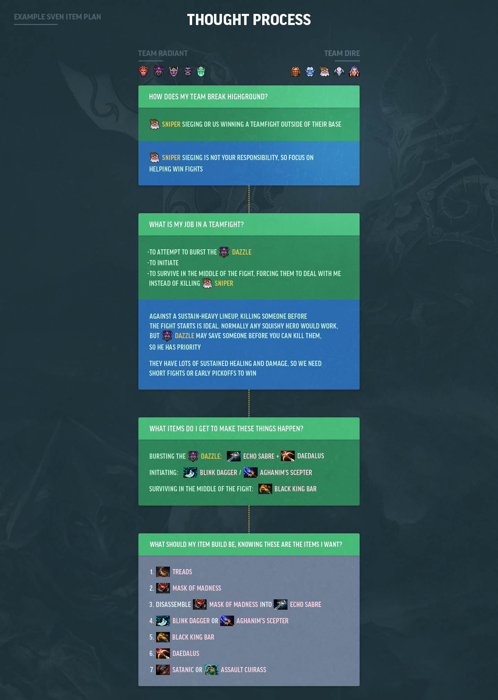
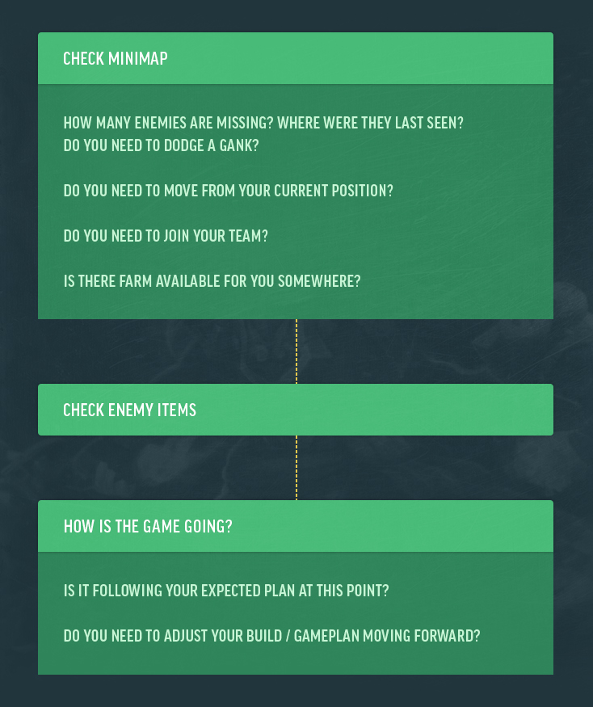

<!DOCTYPE html>
<html lang="en"></html>

<html>

<head>
    <meta charset="UTF-8">
    <title>Improving Efficiently</title>
</head>

<body>

    <h1><strong>Improving Efficiently - A Guide to Getting Good</strong></h1>

    <p>
        I remember back when ranked matchmaking was released in Dota 2. I calibrated around 4k mmr. I spent around two years bouncing between 4k and 4.6k, trying as hard as I possibly could to win every game and increase my mmr, all in pursuit of that +25. Eventually I had a realization that led to me jumping from 4.4k to 5.2k faster than I ever expected. It became clear to me that I was just focusing on winning and not improving. That’s all that Sumail did to get to where he is today. The same goes for Arteezy, N0tail, and every other professional player. Working on improving yourself, that’s the only thing you need to do.
    </p>

    <p>
        Now, that’s a lot easier said than done. It’s like Teddy Roosevelt said;
    </p>

    <p>
        Nothing in the world is worth having or worth doing unless it means effort, pain, difficulty…
    </p>

    <p>
        — Theodore Roosevelt, <em>American Ideals in Education</em>, 1910
    </p>

    <p>
        and trust me, your journey will have plenty of all three. In the end, though, your hard work will be worth it.
    </p>

    
    
    <p>Disclaimer</p>
    
    <p>This guide is not about easily gaining MMR. It’s about making sure you have the means to improve as a player on your own, making more efficient use of your practice time, and becoming a better gamer.</p>
    
    <p>Let’s start with an archetypal competitive gamer, someone who represents what we aspire to. We need look no further than TI Winner Gustav “s4” Magnusson. s4 is hands-down one of the greatest players to ever play Dota, belonging to an exclusive tier of players where any pro team would be happy to have him join their squad. If you look up pro players talking about s4, they’ll usually talk about how impressive he is, even from the perspective of a pro player. They’ll also mention how good he is at other games. For example, s4 reached Global Elite in CS:GO. That’s the Counterstrike equivalent to Immortal.</p>

    

    <p>A common quote about him goes as follows “Most people are good at one game, S4 is good at all games.” After hearing all this, one might wonder what sets s4 apart. One explanation is that s4 is just one of the most naturally talented gamers in the world, showing proficiency in games that seem to share no overlap in skillsets. While that could be the case, it’s likely that s4 learned how to practice incredibly efficiently. He develops his skill set faster than those around him by using his time and energy more efficiently than his competitors.</p>

    <p>Like the ancient Nordic vikings said, S4 wasn’t built in a day… or something like that. To learn how to be like S4 we need to learn how to improve efficiently, just like he does. But before you learn the specifics of how to improve efficiently, you need to make sure you’re in the right mentality. So let’s talk about the mental aspects of practice, training, and self-improvement. First we’ll cover the cornerstones of self-improvement: effort, focus, and a positive mentality. With those covered we’ll move on to what the process of improvement actually looks like and specific steps you can take to improve.</p>

    <h2><strong>Part 1: Improving is 90% Mentality, 10% Effort</strong></h2>

    <h3><strong>Effort and Focus</strong></h3>

    <p>Most people misunderstand effort and hard work when it comes to improving themselves. You often hear phrases like “If you work hard, you can do anything!” Well, that’s somewhat true, but also a bit misleading. You see, effort means nothing if it is not properly applied. Let’s use learning to play an instrument as an example. In this case we have two students, one who is learning to play the guitar and one who is learning to play the violin. The guitar student takes their instrument with them everywhere they go, casually strumming it and playing whatever their heart desires. They engage in no formal or focused practice, considering any form of playing as good practice.    </p>

    <p>The violin player, on the other hand, only uses their instrument during intense one to two hour practice sessions every day. Rather than playing random songs, they intentionally practice specific sections of songs that they have trouble with, upgrading to more complex, difficult songs over time. Say each of these players continues like this for a decade or two. Eventually the violinist may become a professional musician. Meanwhile, the guitarist will remain a casual musician, despite spending significantly more time with their instrument.</p>

    <p>Remember earlier when I mentioned just trying as hard as I could but not making any progress? Unfortunately, in retrospect, nearly all of this effort was wasted because I was focusing entirely on winning each and every game. My own play barely mattered to me compared to whether or not I won the game. It didn’t matter that I didn’t flame my teammates, I still got just as frustrated at the loss and myself. This is a perfect example of how not to apply effort, my poor mentality and lack of focus meant that no amount of try-harding would help me. I was essentially Sisyphus, doomed to forever climb the hill that is 4k, only to fall back down each time.</p>

    <p>Eventually something clicked and I realized how poor my mentality had been all this time. With just a change in mentality, I shot up to 5k+, making more progress in two weeks than I had made in two years. Can you guess what I focused on during this period? Not dying. That’s it. Focusing on my play helped improve my mood as well, because a loss was no longer a complete failure.</p>

    <p>Staying focused allows you to get more out of two Dota games than you would 10 games of unfocused Dota. That said, you should still strive to increase the number of games you can play with full focus. I had a friend that played support and would never play more than two solo ranked games a day. He made it to 6500+ mmr by playing solo ranked this way. This strategy was great for his mmr, however he could have made it farther if he worked on his endurance. After all, staying focused for three games a day would be better than two.</p>

    <p>So what is it that makes focus so valuable for long-term improvement? Well, as we discussed before, your subconscious habits are a big part of how you play dota. Even if you mostly run on a subconscious level, Dota is a complex enough game that unless you’re playing against players that are much worse than you, you probably can’t rely just on your subconscious to win the game. Thankfully, this is accurately described by the common phrase “Running on autopilot.” So the point of this is that if you’re running on autopilot, then you are not playing up to your full potential. If you aren’t doing that then you aren’t pushing your boundaries, meaning that you also aren’t improving as a player.</p>

    <p>So running on autopilot means you won’t improve. If you are focused while playing dota, you should be proactively thinking about all sorts of things that are going on in the game and that you can do (things we’ll get into in part 2 of this series, as that is a large enough section to deserve an article in its own right). This, alongside maintaining a positive mentality, is one of the most necessary aspects to improving efficiently.</p>

    <h3><strong>You suck and PMA - Two sides of the same coin</strong></h3>

    <p>You know how Purge’s old beginner’s guide began with “<a href="https://purgegamers.true.io/g/dota-2-guide/">Welcome to Dota 2, you suck.</a>”? Well, it’s true. If you’re playing Dota 2 and trying to improve, it’s important to remember that you suck. But hey, you aren’t alone. You suck, I suck, pro players suck, everyone sucks. Now, I don’t mean this completely literally. The point of this is to stay humble and remember that there is always a bigger fish. TI5 Sumail was worse than TI7 Miracle, and TI5 Sumail is worse than Sumail is now (even if he’s not the best player in the world now, he’s still better relative to his past self). No matter how good you are, you can always improve.
    </p>

    

    <p>Now, while staying humble is important, it’s just as important to not be too hard on yourself and to stay in a positive mindset. Not having a positive mindset will often make you more irritable, less focused, less likely to realize your own mistakes, and more likely to develop bad habits. In my opinion, this is one of the hardest things to do in Dota, but also one of the most rewarding. If you can maintain a positive mindset while staying focused and working on improvement, everything will fall into place eventually. Your decisions will, you’ll know how to react to situations before they even happen, you’ll become a better gamer.</p>

    <p>Unfortunately, I can’t just tell you how to stay in a positive mindset because the barriers to keeping a good attitude vary from person to person. What we can go over, however, are a few of the common pitfalls that people encounter. But, before we do, I’d like to remind you of this video from TI7’s Film Contest:</p>

    <h1>YOUTUBE EMBED THE DR. ZEUSS VIDEO HERE</h1>

    <p>The message of this video is actually great to follow for trying to be in a good mindset regarding understanding when other people mess up or feed. I know getting frustrated will happen eventually, it’s not reasonable to ask you to never get frustrated, but you can work to have it happen less often or how much it affects you. Here are some things that I find helpful to prevent / death with frustration with yourself or with your teammates:</p>


    <ul>
        <li>Once something has happened, there’s no changing that it has already happened, the best thing to do is figure out how to move forward in your new situation.</li>
        <li>Don’t beat yourself up for getting frustrated, a good way to deal with negative emotions like that is to just try to accept that you feel that way. Being too hard on yourself for things like this just gives you more negative feedback for already feeling negative, a bad cycle.</li>
        <li>If you’re frustrated or in a bad mood after a game, take a break before playing again.</li>
        <li>Remember that you’re in it for the long-haul and that any given game isn’t worth getting very frustrated or upset about</li>
        <li>There is no trench. Even if you think everyone in Ranked Matchmaking except for you is incompetent, that still means you would gain mmr over time (because your team would have 4 incompetent players whereas the other team would have 5). This logic can be applied to feeders, griefers, etc. as well.</li>
        <li>Don’t fall into The Dota Spiral, and if you do, take a break from Dota. The Dota Spiral is essentially a long-term state of tilt. It happens when someone has lost a lot of games recently and becomes so desperate to win that that is all they focus on. It’s essentially the bargaining stage of depression applied to trying to win Dota games. The best way I’ve found to get around this is to take a break from Dota for multiple days, sometimes longer.</li>
    </ul>

    <h3><strong>Game Sense: What It Is, What It Does, and How to Improve It</strong></h3>
    
    <p>Game Sense is the ability to subconsciously understand and predict the state of the game. This can come in many forms, but here are a few examples to start: predicting your opponents’ plans, knowing how they will react to something you do, or realizing that you are getting ganked without vision of the enemy heroes. In pro games you’ll sometimes see players react seemingly before an enemy makes a play, without direct knowledge of the enemy’s plan. This is what we usually refer to when we think of Game Sense. Game Sense is something that comes from experience (sometimes requiring vast amounts of it) and can be difficult to practice directly, though I believe it is possible to train your game sense faster through consistent, planned effort.</p>

    <p>So if you are looking to improve your Game Sense or specific aspects of your Dota-playing, the best way to do it is through making a proactive effort over a considerable number of games. Don’t try to tackle everything at once, though, or you will become overwhelmed with the number of things to work on and keep track of.</p>

    

    <p>Instead, focus on one specific aspect of your play at a time, such as: minimap awareness, dying less, teamfight participation, or not tunnel-visioning. There are many more than these three, but those specifics follow shortly. Let’s use minimap awareness as an example. In the past I used a timer that beeps every five seconds to remind me to look at the minimap. Over time it became enough of a habit that I didn’t need the timer anymore.</p>

    <p>Once you’ve trained enough that aspect has become second nature, move on to the next aspect of your play that you wish to improve. It’s very important to build up this game-sense and make your subconscious dota-playing as strong as possible, because it means that your conscious mind has more time to focus on more important aspects of the game.</p>

    <p>That’s it for Part 1 of this series on How to Improve Efficiently at Dota 2. In the next section we’ll go over specific steps to take towards improvement. Lastly, if you take anything away from this article, let it be this:</p>

    <p>Do not autopilot while playing. The more proactively you think, the faster you will improve and the better you will play.</p>

    <h2><strong>Part 2 Specific Steps to Aid Improvement</strong></h2>

    <h3><strong>Goals</strong></h3>

    <p>Setting a proper goal for yourself is as important as anything aspect of this guide. It’s also often important to set up both long term goals and smaller milestones that, when achieved, will show the progress you are making towards your larger goal.</p>

    <ul>
        <li>An important aspect of setting proper goals is making sure our goals are tweaked for being relevant to Dota 2. In games like Starcraft it becomes much easier to measure your own performance because issues like supply capping are easier to point out and solve than being behind on last hits.</li>
        <li>Both your large goal and your smaller milestones should be measurable, not just “I want to get better” (though, it is important to realize that as you work towards a goal you have to improve first and then you’ll reach the goal later, you won’t just magically gain 1000 mmr).
        </li>
    </ul>

    <p><strong>Narrowing your hero pool: Why practicing the same few heroes over and over helps you improve faster</strong></p>

    <p>Ask any pro player about improving and they’ll tell you that playing a small number of heroes and roles is one of the best ways to improve. Narrowing your hero pool is good because it allows you to focus on improving as a player. The issue is that you can’t focus on improving as a player if you’re too busy getting comfortable with a hero’s mechanics. It takes too much mental energy to involve yourself in the intricacies of that individual hero, even if you already know what they do in theory. The most extreme example of this is Invoker. If you don’t play him regularly, you’re going to be far too busy trying to invoke spells properly to focus on things that apply to all heroes like map awareness or proper positioning.</p>

    <h3><strong>Establish a plan for each game</strong></h3>

    <p><strong>Team Planning:</strong></p>

    <p>During the build-up, but particularly once all the heroes for both teams are decided, you should be planning out how you want to play the game. Once established, this plan should inform your play for the rest of the game. Here are some flow chart examples:</p>

    

    <p>This is not an exhaustive list, but represents the importance of determining what your macro-level strategy for winning the game is. Make sure you understand your team’s strengths and weaknesses when planning, or you could fall right into the enemy’s hands.</p>

    <p><strong>Player Planning:</strong></p>

    <p>Now that you have a general route to victory, you can start planning out the best way to contribute to that plan based on various factors including: your team’s plan, the enemy team’s plan, your team’s heroes, the enemy team’s heroes, and your role on your team. Once again I’ll provide a thought-process, this time from the perspective of a Sven for a specific game:</p>

    

    <p>Simple questions can sometimes lead down long paths, but it’s much better to think about these kinds of things before the game has started than while in a team fight. Lastly, make sure to update your plan throughout the game. Continuing to update your plan whenever you get new information is just as important as establishing a good starting plan.</p>

    <p><strong>Use reminders to help you build habits</strong></p>

    <p>This one is pretty simple, use something outside the game to remind you to do something. In my case I used <a href="https://www.youtube.com/watch?v=NMIZQcebfKI">this video</a> to help me remember to look at the map more often. Every five seconds it would beep and I would check my map. You can use anything to help with this, for example some people put up sticky notes with messages like “Shove Lanes!” on their monitors.</p>

    <p><strong>Cycling</strong></p>

    <p>Going through the cycle of actions to take and things to note / think about to help improve your decision making. You can change your order / priority and customize this to whatever works for you. It’s also easier to start with a smaller list, but once you engrain this kind of thinking as a habit it will help an incredible amount.</p>

    

    <p>You should make a conscious effort to cycle like this whenever you don’t have something that requires your direct attention. Farming jungle? Cycle. Running across the map to ward somewhere? Cycle. Dead? Cycle. This ties into what I talked about in Part 1 of this series with staying focused and actually making use of all the time you have available to you (if you really work on cycling, you’ll realize how much mental “downtime” you have in every Dota game.</p>

    <h2><strong>Part 3: How to Analyze Replays</strong></h2>

    <h3><strong>Analyzing Pro Replays</strong></h3>

    <h1><strong>[INSERT THIS SECTION ONCE YOU KNOW HOW TO DO SUB-LISTS]</strong></h1>


</body>
</html>